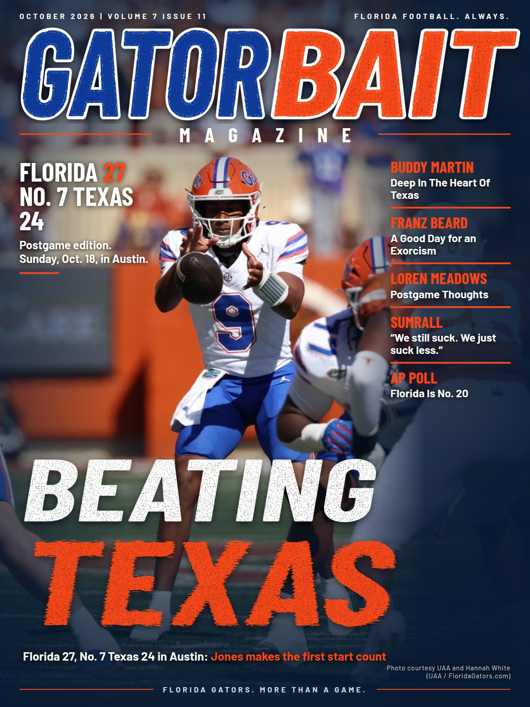

The photograph does its job.
Jones, the ball and the snap create a clear focal point. Keep that authentic action as the center of the design.
The current cover has the right action photo and a strong headline. Its small cover lines lose their impact when the whole page fits on a phone.

Review the supplied replacement at actual phone size before swapping it in. Protect Jones' face and the ball, simplify the score block, and keep the photo credit visible.
Jones, the ball and the snap create a clear focal point. Keep that authentic action as the center of the design.
Five teasers compete for a narrow strip. Its 25-pixel body type shrinks to about 7 pixels when this cover is 340 pixels wide. Fewer, larger lines will read faster.
The final score is split across three lines, with Texas' 24 on its own. Keep each team and score together in one compact block.
"Beating Texas" stays clear at small size. A replacement should retain that directness and give the secondary content more breathing room.
Replacement review pending: the new cover has not been identified in the supplied files. This review shows the current artwork.